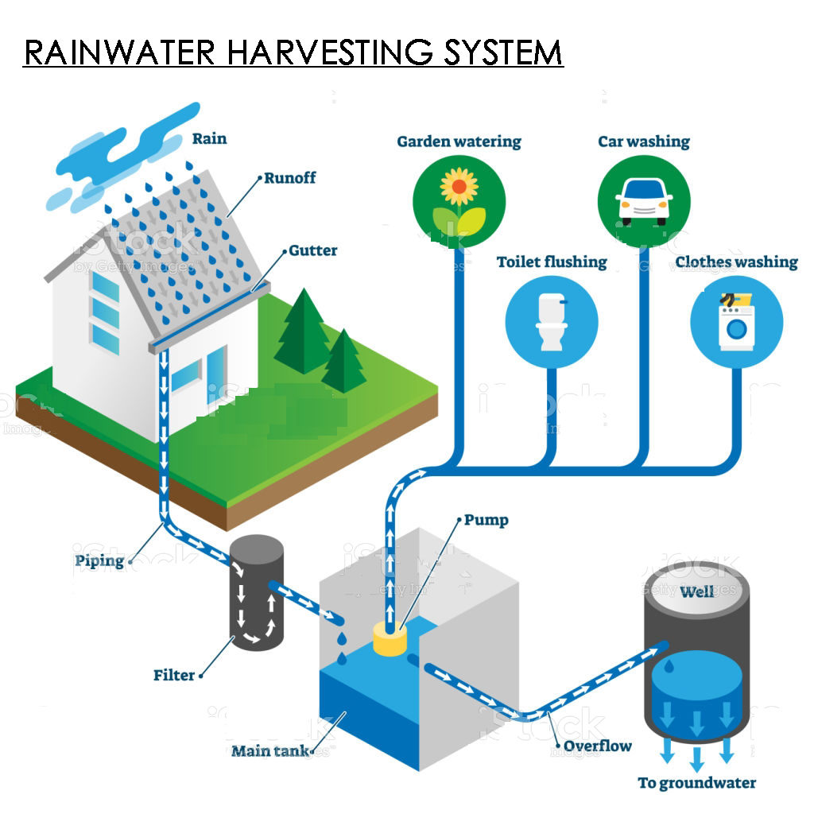

SCIENCE
I had submitted the MD-project for science but I lost it becuase of my mobile was formatted, teacher also has it.
Rain water harvesting is a proccess in which rain water is collected and then, it is
stored inside underground tanks. It is stored inside tanks because for example, if a
drought occurs in the future and there is water scarcity around us, then we can
reuse that collected water for our needs.
Steps to conduct rainwater harvesting-
Step 1: It is first collected through pipes, on the roof top.
Step 2: It then, slips down the pipes
Step 3: It is filtered and then stored in an underground tank.
